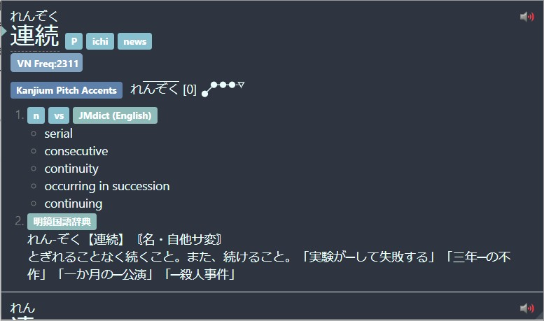
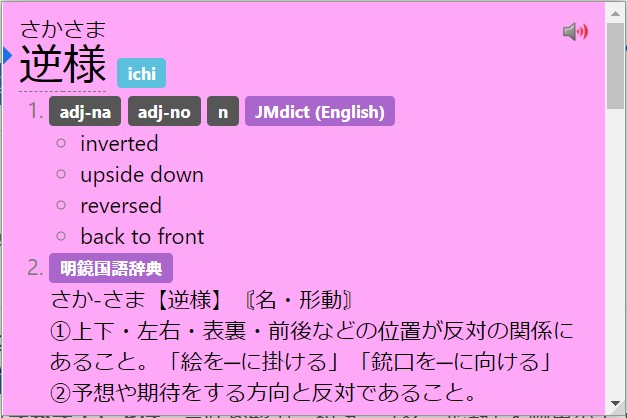
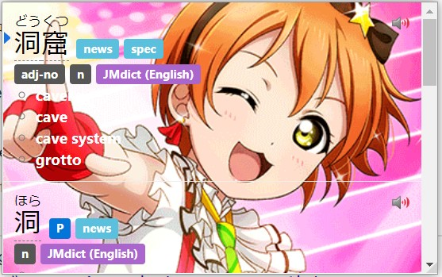
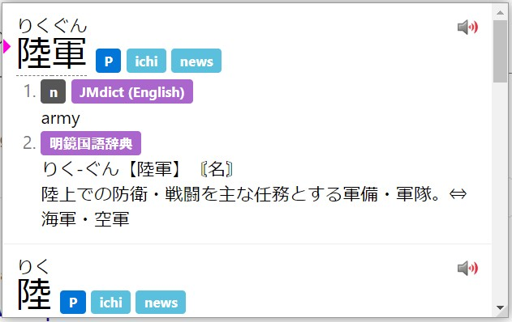

Yomichan Custom CSS¶
This is an optional tutorial.
If you want to setup Yomichan, you can find that here
The appearance of the Yomichan pop-up window can be modified with custom CSS found in the settings.
In the v2 settings page, it can be accessed by going into "Appearance" then "Configure custom CSS" and "Popup CSS"
There are many, many advanced modifications you can make with custom CSS, however, I will only go through a few examples.
Headword¶
The headword can be modified with the classes below:
/* For kanji */
.kanji-link {
}
/* For kana & alphanumeric characters */
.source-text {
}
/* For furigana */
ruby {
}
Furigana Color
If no color is specified for the ruby selector, it will be overridden by the source-text class.
Example: changing font size and color of the headword¶
With the following CSS:
.kanji-link {
font-size: 25px;
color: #00FBFF;
}
.source-text {
font-size: 25px;
color: #FA73FF;
}

This demonstrates differing font colors for kanji and kana. You may edit this to your heart's content.
Definition¶
The definition can be modified with the class below:
.term-glossary {
}
Example: changing font of definitions¶
Custom Fonts
To use a certain font in Yomichan, the font must be installed on your system. You can find installed fonts in:
Windows: C:/Windows/Fonts
Linux: /usr/share/fonts or /usr/share/local/fonts or $HOME/.fonts
macOS: /System/Library/Fonts or $HOME/Library/Fonts
Newly installed fonts may require a system restart to be detected by Yomichan.
With the following CSS:
.term-glossary {
font-family: MS Mincho; /* Japanese serif font provided in Windows */
}
This demonstrates the changing of font for definitions to MS Mincho. Linux users may be able to use Noto Serif CJK JP as an alternative.
Font installed, but not detecting?
Try using quotation marks "" e.g. font-family: "07やさしさゴシック";
Example: Using DJT's quiz font (funny)¶
With the following CSS:
/* You must have 衡山毛筆フォント行書 installed on your system for this to work. */
.term-glossary {
font-family: "衡山毛筆フォント行書";
}
You may edit this to your heart's content.
Tags¶
Tags can be modified with the classes below:
.tag {
}
.tag-inner {
}
.term-special-tags {
}
.tag-list {
}
.term-definition-tag-list {
}
Example: Removing all tags¶
With the following CSS:
.tag {
display: none;
}
The result:

You may edit this to your heart's content.
Example: Changing color of tags¶
You can change the color of tags by changing the following variables below:
:root { /* Light Theme */
# :root[data-theme="dark"] { /* Uncomment for dark theme */
--tag-text-color:
--tag-border-color:
--tag-default-background-color:
--tag-name-background-color:
--tag-expression-background-color:
--tag-popular-background-color:
--tag-frequent-background-color:
--tag-archaism-background-color:
--tag-dictionary-background-color:
--tag-frequency-background-color:
--tag-part-of-speech-background-color:
--tag-search-background-color:
--tag-pitch-accent-dictionary-background-color:
}
Example: Full Nord Theme¶
A full Nord theme I made for Yomichan can be found below:
body {
background: #2E3440;
}
.kanji-link {
color: #ebffff;
}
.source-text {
color: #ebffff;
}
.term-glossary {
color: #ebffff;
}
:root {
--background-color: #2E3440;
--tag-text-color: white;
--tag-border-color: transparent
--tag-default-background-color: #88C0D0;
--tag-name-background-color: #88C0D0;
--tag-expression-background-color: #88C0D0;
--tag-popular-background-color: #88C0D0;
--tag-frequent-background-color: #88C0D0;
--tag-archaism-background-color: #88C0D0;
--tag-dictionary-background-color: #8FBCBB;
--tag-frequency-background-color: #81A1C1;
--tag-part-of-speech-background-color: #88C0D0;
--tag-search-background-color: #88C0D0;
--tag-pitch-accent-dictionary-background-color: #5E81AC;
--accent-color: #8FBCBB;
--text-color: #ebffff;
--pitch-accent-annotation-color: #ebffff;
--input-background-color: #3B4252;
--reason-text-color: #5E81AC;
--notification-text-color: #ebffff;
--notification-background-color: #3B4252;
--progress-bar-track-color: #D8DEE9;
--light-border-color: #E5E9F0;
--sidebar-background-color: #2E3440;
--sidebar-button-background-color: transparent;
--sidebar-button-background-color-hover: #81A1C1;
--sidebar-button-background-color-active: #6d88a3;
--sidebar-button-danger-background-color: transparent;
--sidebar-button-danger-background-color-hover: #BF616A;
--sidebar-button-danger-background-color-active: #8a373f;
--sidebar-button-icon-color: #ebffff;
--sidebar-button-disabled-icon-color: #808c8c;
--sidebar-button-danger-icon-color: #ebffff;
}
::-webkit-scrollbar {
display: none;
}
The result:

Background¶
Background can be edited with the selector below:
body {
}
Example: Changing background color¶
With the following CSS:
body {
background: #FFA8F8;
}
The result: 
You may edit this to your heart's content.
Using image as background¶
Chromium instructions for now
To do this, you must install Yomichan dev build from GitHub instead of the Chrome Web Store, this is because we will be tampering with the files of the extension, which will be flagged if you get it from the Chrome Web Store.
You can find it below.
[GitHub]
Yomichan Data
All Yomichan data including dictionaries will be reset, you may be able to just copy the files over from your current Yomichan installation though.
Download yomichan-chrome-dev.zip and unzip it anywhere on your computer.
Now go to chrome://extensions and enable Developer Mode in the top right.
Now click "Load Unpacked" and select the folder the .zip was extracted to.
Now go to your Yomichan path which should be the same place you unzipped it and put your desired image in the fg folder.
Now you can do the following CSS below.
body {
background-image: url("name_of_file.png") !important;
}
The result:

Yomichan 21.1.31.0 annoyances¶
Since 21.1.31.0, there have been MANY poor design decisions. Here I will help you fix them.
Ctrl+C / ⌘+C not working¶
This is not CSS but definitely needs addressing.
Settings > Shortcuts > Configure standard... > 16. > DISABLE
Titles??¶
Titles such as "Frequencies", "Pitch Accents" and "Definitions" have been added, and I have no idea why.
Use the following CSS below to remove them.
h5 {
display: none;
}
Frequency value outside of tag¶
This could be a bug, I don't know, but lets fix it.
Existing CSS
If you already have existing CSS, this must be placed right at the top for it to work.
.frequency-group-item {
display: inline-block;
margin-right: 4px !important;
}
.frequency-value {
font-size: var(--tag-font-size);
font-weight: var(--tag-font-weight);
line-height: 1.25;
text-align: center;
white-space: nowrap;
}
.frequency-group-item {
margin: 0.1em 0em;
padding: 0em 0.3em 0.0em 0.1em;
border-radius: 0.25em;
color: var(--tag-text-color);
background-color: var(--tag-frequency-background-color)
}
.frequency-group-item .tag {
margin-right: 0;
padding-right: 0;
}
.frequency-value:before{
content:":";
}
.entry-body-section-content.frequency-group-list{
padding: 0;
}
And viola, that issue should be fixed.
Miscellaneous¶
Some misc. modifications you can do which I found cool.
Removing current entry indicator¶
Since Yomichan was updated, a blue indicator has been added. Which has been an annoyance for many long time Yomichan users.
With the following CSS:
.term-expression-current-indicator {
display: none;
}
The result:

Removing progress bar¶
Since Yomichan was updated, a blue progress bar when loading audio has been added. Which has been an annoyance for many long time Yomichan users.
With the following CSS:
.top-progress-bar-container {
display: none;
}
Indicator and progress bar colors¶
Alternatively, if you don't like the current color of the indicator and bar, you can change it rather than removing it.
You can add the pseudo-class selector and custom property below:
:root {
--accent-color: #FF00DD; /* Change color to a pink */
--progress-bar-track-color: #00F7FF; /* Change bar track color to a blue */
}
:root[data-theme="dark"] {
The result:

Removing Edict markers¶
In Edict dictionaries such as JMdict and KireiCake, there are markers that look like ○ which can be annoying for some.
You can remove it by using the CSS below:
.term-glossary-list {
padding: 0;
list-style-type: none;
}
The result:

Light / Dark mode varying CSS¶
An example of varying CSS for light / dark modes can be found below.
:root[data-theme="dark"] {
--glossary-color: #a89984;
--ruby-color: #b8bb26;
--kanji-text-color: #fabd2f;
--background-color: #282828;
--accent-color: #689d6a;
--progress-bar-track-color: #458588;
}
:root {
--glossary-color: #504945;
--ruby-color: #98971a;
--kanji-text-color: #d79921;
--background-color: #fbf1c7;
--accent-color: #689d6a;
--progress-bar-track-color: #458588;
}
.kanji-link {
font-family: UD Digi Kyokasho N-R;
}
ruby {
color: var(--ruby-color);
}
.source-text {
font-family: UD Digi Kyokasho N-R;
}
.term-glossary {
color: var(--glossary-color);
}